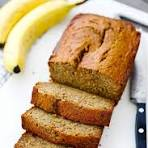

Homemade Banana Bread Recipe

Homemade banana bread is an easy and delicious sweet
that is great anytime or for any occasions. Easy to bake
with minimum prep time, it great for whenever you're
hungry for something sweet, or just have some overripe
bananas you do't want to waste.
Ingredients
- 1 cup of Sugar
- 2 eggs
- 1 tsp of Vanilla
- 1/2 cups of Butter
- 1/2 tsp of Salt
- 3 ripe Bananas
- 2 cups of Flour
- 1 tsp of Baking Soda
- 1/2 tsp of Baking Powder
- Optional: 1/2 cup of Chocolate Chunks, Pineapple, or Nuts
How to Make
- Preheat oven to 177°C
- Add sugar, eggs, vanilla, and butter in a large mixing bowl
- Mix until ingredients until creamy
- In separate bowl, add the bananas
- Mash bananas into a creamy paste
- Add mashed bananas into main bowl
- Add remaining ingredients
- Mix thoroughly
- Place batter into bread pan
- Bake for 1 hour